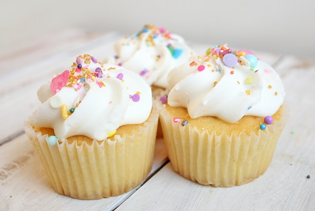

Vanilla Cupcake
>
Description
It's a cupcake and it's vanilla flavored.
Ingredients
- ¾ cup superfine sugar
- ⅔ cup butter, softened
- 3 large eggs
- 1 ½ cups self-rising flour
- 1 teaspoon vanilla extract
Steps
- Preheat the oven to 350 degrees F (175 degrees C). Grease a 12-cup muffin tin or line cups with paper liners.
- Beat sugar and butter together in a large bowl with an electric mixer until light and fluffy. Add eggs one at a time, beating well after each addition. Beat in vanilla extract. Stir in flour just until mixed; spoon batter into the prepared muffin cups, filling each 3/4 full.
- Bake in the preheated oven until the tops spring back when lightly pressed, 18 to 20 minutes. Cool in the tin briefly before transferring to a wire rack to cool completely.
<---- TAKE ME BACK!!!